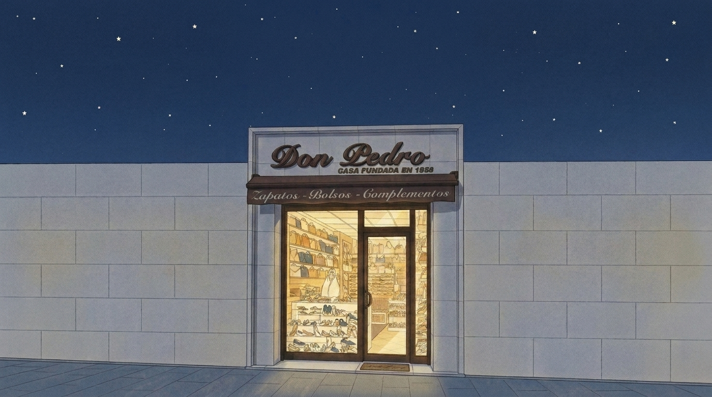

1 Edit the FIRST attached illustration into a night version, keeping the composition, facade, walls, sign, awning, window, door and every line EXACTLY in the same position (pixel-aligned). Only change the lighting and sky to match the SECOND attached image: deep navy night sky (#2E4674) with small cream stars instead of the golden sky and sun rays; walls slightly cooler in the night light; shop window and glass door glowing with warm yellow light from inside, exactly like the second image. No new objects, no new text.

2 Edit the FIRST attached illustration into a night version, keeping the composition, facade, walls, sign, awning, window, door and every line EXACTLY in the same position (pixel-aligned). Only change the lighting and sky to match the SECOND attached image: deep navy night sky (#2E4674) with small cream stars instead of the golden sky and sun rays; walls slightly cooler in the night light; shop window and glass door glowing with warm yellow light from inside, exactly like the second image. No new objects, no new text.